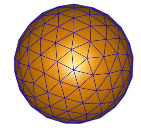
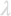
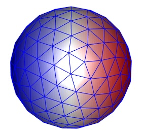

Getting started
The BEM approach for the solution of the quasistatic Maxwell equations is described in Hohenester, Nano and Quantum Optics (Springer, 2020), chapter 9. In the following we discuss a typical BEM example for a gold nanosphere in water.
Contents
Nanoparticle
In a first step we set up the Material objects, the nanoparticle boundary, and define how the boundary is embedded in its photonic environment.
% material properties for water and gold mat1 = Material( 1.33 ^ 2, 1 ); mat2 = Material( epstable( 'gold.dat' ), 1 ); % material vector, the first entry is the embedding medium % use the same material vector throughout a simulation mat = [ mat1, mat2 ]; % nanosphere with 10 nm radius diameter = 10; p = trisphere( 144, diameter ); % convert to boundary elements with linear shape functions % [ 2, 1 ] defines the materials at the particle inside and outside tau = BoundaryVert( mat, p, [ 2, 1 ] )
tau =
1�284 BoundaryVert array with properties:
nu
inout
verts
Once the boundary elements are initialized, the boundary can be displayed using
% plot nanosphere boundary plot( tau, 'EdgeColor', 'b' );

BEM solver and excitation
We next have to set up the BEM solver and the excitation, here a plane wave excitation.
% initialize BEM solver rules = quadboundary.rules( 'quad3', triquad( 1 ) ); bem = galerkinstat.bemsolver( tau, 'rules', rules ); % planewave excitation exc = galerkinstat.planewave( [ 1, 0, 0 ] );
The integration rules control the accuracy of the BEM approach. In the last line we set up a planewave object with the polarizaion along direction [1,0,0]. In order to solve the BEM equations, we have to specify a wavelength

, compute the inhomogeneities for the plane wave excitation, and solve the quasistatic BEM equations% wavelength of light in vacuum lambda = 600; % toolbox internally uses wavenumber of light in vacuum k0 = 2 * pi / lambda; % plane wave excitation q = exc( tau, k0 ); % solve BEM equations sol = bem \ q
sol =
solution with properties:
tau: [1�284 BoundaryVert]
k0: 0.0105
sig: [144�1 double]
We can now plot the surface charge associated with the solution vector sol using
% plot surface charge distribution plot( tau, sol.sig, 'EdgeColor', 'b' ); colormap( redblue );

Spectrum
In order to compute a spectrum for different wavelengths, one has to set up a wavenumber array and loop over the different wavenumbers
% light wavelength in vacuum lambda = linspace( 400, 800, 20 ); k0 = 2 * pi ./ lambda; % allocate optical cross sections [ csca, cext ] = deal( zeros( numel( k0 ), size( exc.pol, 1 ) ) ); % loop over wavenumbers for i = 1 : numel( k0 ) % solution of BEM equations sol = bem \ exc( tau, k0( i ) ); % scattering and extinction cross sections csca( i, : ) = scattering( exc, sol ); cext( i, : ) = extinction( exc, sol ); end
Once the spectrum has been computed, it can be plotted. For a spherical particle one can also compare the results with quasistatic Mie theory.
- demostatspec01.m - Optical spectrum for metallic nanosphere using the quasistatic approximation.
Copyright 2022 Ulrich Hohenester